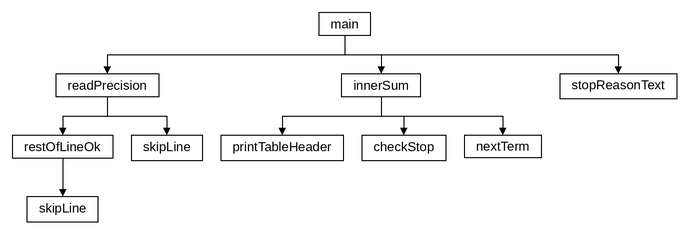

LAB3(19)Основи програмуванняLAB3(19)
Лабораторна робота №3
Циклічні обчислювальні процеси
Варіант 19. Виконав: Одарчук Олексій, КНУ імені Тараса Шевченка, Факультет інформаційних технологій, Кафедра програмних систем і технологій, група ІПЗ-11. C17, gcc
- 1 завдання
- C
- 8 розділів
01Мета роботи#
- Вивчити особливості циклічних обчислювальних процесів.
- Опанувати технологію використання операторів циклів.
- Навчитися розробляти алгоритми та програми циклічних процесів.
02Умова задачі#
Обчислити суму ряду (таблиця 3.1, варіант 19):
5 ∞ (-1)^k · x^k Σ Σ ───────────────────── x=1 k=0 (k + 2)³ · √k
Вимоги методичних вказівок до реалізації:
- зовнішню суму з параметром від 1 до 5 обчислювати циклом
for; -
внутрішню суму з параметром від 0 до нескінченності - циклом
whileабоdo...while; - точність розрахунку поточного елемента ряду задає користувач; підсумовування припиняється при її досягненні;
- кількість доданків внутрішньої суми для кожного параметра зовнішньої має бути різною;
- розрахунок степеня виконувати за рекурентними співвідношеннями;
- для запобігання переповненню виходити з внутрішнього циклу при досягненні елементом ряду значень 10⁻³⁸ або 10⁺³⁸;
- результат подати таблицею з чотирьох колонок: параметри зовнішньої та внутрішньої сум, значення члена ряду, накопичувана сума.
03Аналіз задачі та теоретичне обґрунтування#
Нижня межа внутрішньої суми#
При k = 0 знаменник містить множник √0 = 0, тобто елемент ряду
не визначений. Тому підсумовування починається з k = 1; програма повідомляє
про це під час запуску.
Збіжність ряду#
Модуль елемента ряду поводиться як x^k / k^3,5. Показникова функція
x^k зростає швидше за будь-який степінь k, тому:
-
при
x = 1ряд є знакозмінним із монотонно спадними за модулем членами - за ознакою Лейбніца збігається; -
при
x = 2, 3, 4, 5члени ряду за модулем необмежено зростають - необхідна ознака збіжності не виконується, ряд розбігається.
Тому потрібен контроль переповнення: внутрішній цикл припиняється, коли елемент
перевищує 10⁺³⁸, і програма повідомляє причину зупинки для кожного x.
Рекурентне співвідношення#
Щоб не обчислювати степінь x^k і знак (-1)^k на кожній ітерації, елемент ряду виражається через попередній:
a(k) = (-1)^k · x^k / ((k+2)³ · √k) a(k+1) (k+2)³ · √k ──────── = -x · ───────────────── a(k) (k+3)³ · √(k+1)
Перший доданок обчислюється явно, оскільки рекурентний перехід від k = 0
неможливий:
a(1) = (-1)¹ · x¹ / (3³ · √1) = -x / 27
Вибір операторів циклу#
Зовнішній цикл - for: кількість повторень відома (5). Внутрішній -
do...while: кількість доданків наперед невідома, а перший доданок додається
завжди. Умови припинення перевіряються до обчислення наступного елемента, щоб зберегти
причину зупинки.
Точність вводиться з клавіатури як додатне дійсне число. Сторонні символи після числа
(наприклад, 1e-6abc) відхиляються функцією restOfLineOk().
Вибір типів даних#
| Змінні | Тип | Чому |
|---|---|---|
параметр зовнішньої суми x |
short |
значення від 1 до 5 |
точність eps, пороги OVERFLOW_LIMIT,
UNDERFLOW_LIMIT, знаменник першого доданка
firstDenominator
|
float |
значення 1e-38, 1e+38 і 27 вміщуються в діапазон float |
номер доданка k, кількість доданків terms |
int |
при eps < 1e-16 номер доданка перевищує 32767, тому
short не підходить
|
елемент ряду term |
double |
|a(k)| сягає 3,6·10³⁸, це більше за найбільше значення
float (FLT_MAX ≈ 3,4·10³⁸)
|
внутрішня сума sum, inner |
double |
float не дає потрібної точності суми для eps < 1e-7
|
загальна сума total |
double |
проміжна сума сягає -3,8·10³⁸, це менше за -FLT_MAX |
проміжні величини kd, numerator,
denominator у nextTerm()
|
double |
відношення множиться на кожному з сотень кроків; похибка
float (~1e-7 на крок) зсуває суму для x = 1 на 1,5·10⁻¹¹ і члени
ряду в 7-й цифрі
|
ознака divergent |
bool |
логічне значення |
символ c у skipLine() і restOfLineOk();
scanned
|
int |
getchar() і scanf() повертають int,
зокрема значення EOF
|
Члени ряду та суми виводяться у форматі %.12e, тому double
лишено для всіх величин, через які проходить накопичення похибки.
Література: Ковалюк Т.В. Алгоритмізація та програмування. - Львів.: "Магнолія 2006", 2024. - 400 с.; Deitel P., Deitel H. C++ How to Program. Pearson Education, Inc. Hoboken, New Jersey. 2017. - 3015 p.
04Блок-схема алгоритму#


HIPO-діаграма показує ієрархію викликів функцій так само, як у лекції 5: зверху головна функція main, від неї стрілки ведуть до функцій, які вона викликає, нижче - функції, що викликаються з них; петля біля блока означає рекурсивний виклик. Функцію, яку викликають з кількох місць, розгорнуто лише там, де вона трапляється вперше, а довгі переліки викликів подано стовпчиком, щоб схема вміщувалася на сторінку. Діаграму побудовано за текстом програми.

Схеми побудовано за текстами програм у rombik (rombik.app) відповідно до ДСТУ 19.701-90 (ISO 5807). Структура кожної схеми точно відповідає коду функції, а блоки описують дії словами, як у методичних вказівках, без фрагментів коду.
05Текст програми#
task1.c
/*==============================================================================
task1.c. Лабораторна робота №3. Варіант 19.
Тема: циклічні обчислювальні процеси.
Умова (таблиця 3.1, варіант 19): обчислити суму ряду
5 inf (-1)^k * x^k
SUM SUM ---------------------
x=1 k=0 (k + 2)^3 * sqrt(k)
Вимоги методичних вказівок до реалізації:
- зовнішню суму (параметр 1..5) обчислювати циклом for;
- внутрішню суму (параметр від 0 до нескінченності) - циклом while
або do...while;
- точність обчислення поточного елемента ряду задає користувач;
- підсумовування припиняється при досягненні заданої точності;
- степінь обчислювати за рекурентним співвідношенням (без pow());
- для запобігання переповненню виходити з внутрішнього циклу при
досягненні поточним елементом ряду значень 1e-38 або 1e+38;
- результат подати таблицею з чотирьох колонок.
Нижня межа внутрішньої суми: при k = 0 знаменник містить множник
sqrt(0) = 0, тобто елемент ряду не визначений, тому підсумовування
починається з k = 1.
Збіжність: модуль елемента ряду поводиться як x^k / k^3.5, тому ряд
збігається лише при |x| <= 1. Для x = 2, 3, 4, 5 елементи необмежено
зростають, і внутрішній цикл припиняється за порогом переповнення 1e+38.
Виконав: Одарчук Олексій, КНУ імені Тараса Шевченка, ФІТ, група ІПЗ-11.
Компілятор: gcc -std=c17
==============================================================================*/
#include <stdio.h>
#include <stdbool.h>
#include <ctype.h>
#include <math.h>
/* Межі контролю переповнення комірки пам'яті, задані умовою варіанта. */
const float OVERFLOW_LIMIT = 1e+38f; //поріг переповнення
const float UNDERFLOW_LIMIT = 1e-38f; //поріг машинного нуля
/* Причина припинення внутрішнього циклу. У мові C ім'я переліку саме по собі
не є іменем типу, тому оголошення загорнуто в typedef. */
typedef enum
{
STOP_NONE, //підсумовування триває
STOP_PRECISION, //елемент став меншим за задану точність
STOP_OVERFLOW, //елемент перевищив 1e+38 - ряд розбігається
STOP_UNDERFLOW //елемент став меншим за 1e-38 - машинний нуль
} StopReason;
//========== stopReasonText: текстовий опис причини припинення підсумовування ==========
/*
stopReasonText - текстовий опис причини припинення підсумовування.
Параметри: reason [вхідний] - код причини.
Повертає : рядок-константу з поясненням.
*/
const char *stopReasonText(StopReason reason)
{
switch (reason) //вибрати опис за кодом причини
{
case STOP_NONE:
return "підсумовування не завершено"; //повернути опис причини
case STOP_PRECISION:
return "досягнуто заданої точності"; //повернути опис причини
case STOP_OVERFLOW:
//повернути опис причини
return "елемент ряду перевищив поріг переповнення (ряд розбігається)";
case STOP_UNDERFLOW:
//повернути опис причини
return "елемент ряду став меншим за поріг машинного нуля";
default:
break; //вийти з перемикача
}
return "невідома причина"; //повернути опис невідомої причини
}
//=========== printTableHeader: вивести заголовок таблиці з чотирьох колонок ===========
/*
printTableHeader - вивести заголовок таблиці з чотирьох колонок: параметри
зовнішньої та внутрішньої сум, член ряду, накопичена сума.
*/
void printTableHeader(void)
{
//вивести назви колонок
printf(" x | k | елемент ряду a(k) | накопичена сума\n");
//вивести роздільник
printf(" -------+--------+------------------------+------------------------\n");
}
//======== nextTerm: обчислити наступний елемент ряду a(k+1) за попереднім a(k) ========
/*
nextTerm - обчислити наступний елемент ряду a(k+1) за попереднім a(k).
Використане рекурентне співвідношення. Елемент ряду
a(k) = (-1)^k * x^k / ((k+2)^3 * sqrt(k))
виражається через попередній, тож степінь x^k і знак (-1)^k не
обчислюються наново:
a(k+1) (k+2)^3 * sqrt(k)
------ = -x * -------------------
a(k) (k+3)^3 * sqrt(k+1)
Параметри:
x [вхідний] - параметр зовнішньої суми;
k [вхідний] - номер поточного елемента;
term [вхідний] - значення поточного елемента a(k).
Повертає : значення a(k+1).
Локальні змінні:
kd - номер елемента у дійсному вигляді (для формул).
*/
double nextTerm(short x, int k, double term)
{
/* double: відношення множиться на кожному з сотень кроків, і похибка float
(~1e-7 на крок) зсуває суму для x = 1 на 1.5e-11 і члени ряду в 7-й цифрі. */
const double kd = (double)k; //номер елемента як дійсне число
//чисельник відношення a(k+1)/a(k)
const double numerator = (kd + 2.0) * (kd + 2.0) * (kd + 2.0) * sqrt(kd);
//знаменник відношення a(k+1)/a(k)
const double denominator = (kd + 3.0) * (kd + 3.0) * (kd + 3.0) * sqrt(kd + 1.0);
return term * (-(double)x * numerator / denominator); //повернути елемент a(k+1)
}
//==== checkStop: визначити, чи треба припинити підсумовування після елемента term =====
/*
checkStop - визначити, чи треба припинити підсумовування після елемента term.
Точність перевіряється першою: елемент, менший за поріг машинного нуля,
менший і за eps, тож збіжний ряд завжди завершується за точністю. Перевірка
порогу 1e-38 передбачена умовою і залишена як окрема причина зупинки.
Параметри:
term [вхідний] - значення останнього доданого елемента;
eps [вхідний] - задана точність.
Повертає : причину припинення або STOP_NONE, якщо підсумовування триває.
*/
StopReason checkStop(double term, float eps)
{
if (fabs(term) < eps) //якщо досягнуто заданої точності
{
return STOP_PRECISION; //повернути причину: точність
}
if (fabs(term) > OVERFLOW_LIMIT) //якщо елемент перевищив поріг
{
return STOP_OVERFLOW; //повернути причину: переповнення
}
if (fabs(term) < UNDERFLOW_LIMIT) //якщо елемент менший за 1e-38
{
return STOP_UNDERFLOW; //повернути причину: машинний нуль
}
return STOP_NONE; //продовжити підсумовування
}
//===== innerSum: обчислити внутрішню суму ряду для заданого параметра x і вивести =====
/*
innerSum - обчислити внутрішню суму ряду для заданого параметра x і вивести
таблицю її елементів.
Перший доданок a(1) = -x / (3^3 * sqrt(1)) = -x/27 обчислюється явно,
оскільки рекурентний перехід від k = 0 неможливий (a(0) не визначено).
Кожен наступний обчислює функція nextTerm(), умову припинення перевіряє
функція checkStop().
Параметри:
x [вхідний] - параметр зовнішньої суми (1..5);
eps [вхідний] - задана користувачем точність;
terms [вихідний] - адреса лічильника обчислених доданків;
reason [вихідний] - адреса коду причини припинення циклу.
Повертає: значення внутрішньої суми.
Локальні змінні:
sum - накопичувана сума ряду;
term - значення поточного елемента ряду a(k);
k - номер поточного елемента ряду.
*/
double innerSum(short x, float eps, int *terms, StopReason *reason)
{
double sum = 0.0; //double: float не дає точності суми для eps < 1e-7
int k = 1; //номер елемента: при eps < 1e-16 перевищує 32767
/* a(1) = -x / ((1+2)^3 * sqrt(1)) = -x / 27: перший знаменник обчислено явно. */
//знаменник першого елемента
const float firstDenominator =
(1.0f + 2.0f) * (1.0f + 2.0f) * (1.0f + 2.0f) * sqrtf(1.0f);
//поточний елемент ряду a(k); double: |a(k)| сягає 3.6e+38 > FLT_MAX
double term = -(double)x / firstDenominator;
*terms = 0; //обнулити лічильник доданків
printTableHeader(); //вивести заголовок таблиці
/* Цикл з постумовою: перший доданок додається обов'язково, а кількість
доданків наперед невідома. */
do //повторювати підсумовування
{
sum += term; //накопичити суму ряду
++(*terms); //збільшити лічильник доданків
//вивести рядок таблиці
printf(" %6hd | %6d | %22.12e | %22.12e\n", x, k, term, sum);
/* Умова припинення перевіряється до обчислення наступного елемента,
щоб не втратити причину зупинки. */
*reason = checkStop(term, eps); //перевірити умову припинення
if (*reason == STOP_NONE) //якщо підсумовування триває
{
term = nextTerm(x, k, term); //обчислити наступний елемент
++k; //перейти до наступного номера
}
} while (*reason == STOP_NONE); //повторювати, доки немає причини зупинки
return sum; //повернути внутрішню суму
}
//========= skipLine: відкинути залишок рядка введення разом із символом '\n' ==========
/*
skipLine - відкинути залишок рядка введення разом із символом '\n'.
*/
void skipLine(void)
{
int c = getchar(); //поточний символ введення
while (c != '\n' && c != EOF) //пропускати символи до кінця рядка
{
c = getchar(); //прочитати наступний символ
}
}
//======= restOfLineOk: перевірити залишок рядка після успішно прочитаного числа =======
/*
restOfLineOk - перевірити залишок рядка після успішно прочитаного числа.
Припустимі лише пропуски до кінця рядка або до наступного числа; інший
символ (наприклад, "1e-6abc") - помилка, і решта рядка відкидається.
Повертає : true - залишок рядка коректний; false - у рядку є сторонні символи.
Локальні змінні:
c - черговий прочитаний символ.
*/
bool restOfLineOk(void)
{
int c = getchar(); //черговий символ рядка
while (c == ' ' || c == '\t' || c == '\r') //пропускати пропуски в рядку
{
c = getchar(); //прочитати наступний символ
}
if (c == '\n' || c == EOF) //якщо рядок закінчився
{
return true; //повернути ознаку коректності
}
if (isdigit(c) || c == '-' || c == '+') //якщо почалося наступне число
{
ungetc(c, stdin); //повернути символ у буфер
return true; //повернути ознаку коректності
}
skipLine(); //відкинути решту рядка
return false; //повернути ознаку помилки
}
//========= readPrecision: прочитати точність обчислення з контролем введення ==========
/*
readPrecision - прочитати точність обчислення з контролем введення.
Приймається лише скінченне додатне число; сторонні символи після числа
вважаються помилкою.
Параметри:
prompt [вхідний] - текст запрошення;
value [вихідний] - адреса змінної для введеного числа.
Повертає : true - число прочитано; false - вхідні дані вичерпано.
Локальні змінні:
scanned - результат scanf(): 1 - число прочитано, 0 - не число,
EOF - вхідні дані вичерпано.
*/
bool readPrecision(const char *prompt, float *value)
{
for (;;) //повторювати до коректного введення
{
printf("%s", prompt); //вивести запрошення
const int scanned = scanf("%f", value); //результат введення числа
if (scanned == EOF) //якщо вхідні дані вичерпано
{
return false; //повернути ознаку кінця даних
}
//якщо введено коректне додатне число
if (scanned == 1 && restOfLineOk() && isfinite(*value) && *value > 0.0f)
{
return true; //повернути ознаку успіху
}
if (scanned == 0) //якщо введено не число
{
skipLine(); //відкинути помилковий рядок
}
//вивести повідомлення про помилку
printf("Помилка: потрібне додатне дійсне число.\n");
}
}
//================================ головна функція main ================================
/*
Головна функція. Читає точність обчислень, обчислює зовнішню суму
циклом for та виводить підсумкову таблицю.
Локальні змінні:
eps - точність обчислення елемента ряду;
total - значення зовнішньої (загальної) суми;
inner - значення внутрішньої суми для поточного x;
terms - кількість доданків внутрішньої суми;
reason - причина припинення внутрішнього циклу;
divergent - ознака того, що хоча б одна внутрішня сума розбіглася.
*/
int main(void)
{
printf("Лабораторна робота №3 (варіант 19)\n"); //вивести назву роботи
printf("Виконав: студент групи ІПЗ-11 Одарчук Олексій\n"); //вивести дані виконавця
printf("Обчислення суми ряду SUM(x=1..5) SUM(k=1..inf) (-1)^k*x^k / "
"((k+2)^3*sqrt(k))\n\n"); //вивести формулу ряду
//вивести примітку про k = 0
printf("Увага: при k = 0 елемент ряду не визначено (sqrt(0) = 0 у знаменнику),\n"
" тому внутрішнє підсумовування починається з k = 1.\n\n");
float eps = 0.0f; //точність обчислення елемента
//якщо не вдалося ввести точність
if (!readPrecision("Уведіть точність обчислення елемента ряду (наприклад 1e-6): ",
&eps))
{
printf("\nВхідні дані вичерпано.\n"); //повідомити про кінець даних
return 1; //завершити з кодом помилки
}
printf("\nЗадана точність: %.3e\n", eps); //вивести задану точність
double total = 0.0; //double: проміжна сума сягає -3.8e+38 < -FLT_MAX
bool divergent = false; //ознака розбіжності ряду
/* Зовнішня сума - цикл з лічильником (for), параметр x = 1..5 за умовою. */
for (short x = 1; x <= 5; ++x) //перебрати значення параметра x
{
//вивести заголовок блоку для x
printf("\n=== Зовнішній параметр x = %hd ===\n", x);
int terms = 0; //кількість доданків: при малій eps > 32767
StopReason reason = STOP_NONE; //причина припинення циклу
//внутрішня сума для x; double: float не дає точності для eps < 1e-7
const double inner = innerSum(x, eps, &terms, &reason);
printf(" Доданків обчислено: %d; зупинка: %s\n", terms,
stopReasonText(reason)); //вивести кількість доданків і причину
//вивести внутрішню суму
printf(" Внутрішня сума при x = %hd: %.12e\n", x, inner);
if (reason == STOP_OVERFLOW) //якщо ряд розбігся
{
divergent = true; //встановити ознаку розбіжності
}
total += inner; //накопичити загальну суму
}
//вивести роздільник
printf("\n============================================================\n");
printf("Загальна сума ряду: %.12e\n", total); //вивести загальну суму
if (divergent) //якщо хоч один ряд розбігся
{
//вивести попередження про розбіжність
printf("\nУВАГА: для деяких значень x внутрішній ряд розбігається\n"
"(|a(k)| ~ x^k / k^3.5 необмежено зростає при x > 1),\n");
printf("тому підсумовування припинено за порогом переповнення %g.\n"
"Загальна сума в цьому разі не має скінченного значення.\n",
OVERFLOW_LIMIT); //пояснити відсутність суми
}
return 0; //завершити успішно
}
06Результати виконання роботи#
Компіляція: make (gcc -std=c17, прапорці
-Wall -Wextra -pedantic -O2). Попереджень компілятора немає.
Нижче наведено екранні копії повних прогонів програм: кожна починається з запуску програми, містить усе введення з клавіатури й увесь вивід до завершення роботи. Прогін, що не вміщується на один екран, подано кількома послідовними частинами. Протоколи всіх прогонів, зокрема додаткових наборів вхідних даних, винесено окремими файлами за посиланнями.


sh./bin/task1 - протокол: 2 прогонів, 928 рядківРозгорнутиЗгорнути
ishawyha@op:~/OP_FirstCourse/Lab3$ ./bin/task1 # точність 1e-6
Лабораторна робота №3 (варіант 19)
Виконав: студент групи ІПЗ-11 Одарчук Олексій
Обчислення суми ряду SUM(x=1..5) SUM(k=1..inf) (-1)^k*x^k / ((k+2)^3*sqrt(k))
Увага: при k = 0 елемент ряду не визначено (sqrt(0) = 0 у знаменнику),
тому внутрішнє підсумовування починається з k = 1.
Уведіть точність обчислення елемента ряду (наприклад 1e-6): 1e-6
Задана точність: 1.000e-06
=== Зовнішній параметр x = 1 ===
x | k | елемент ряду a(k) | накопичена сума
-------+--------+------------------------+------------------------
1 | 1 | -3.703703703704e-02 | -3.703703703704e-02
1 | 2 | 1.104854345604e-02 | -2.598849358100e-02
1 | 3 | -4.618802153517e-03 | -3.060729573451e-02
1 | 4 | 2.314814814815e-03 | -2.829248091970e-02
1 | 5 | -1.303829724490e-03 | -2.959631064419e-02
1 | 6 | 7.973599423122e-04 | -2.879895070188e-02
1 | 7 | -5.184697846491e-04 | -2.931742048653e-02
1 | 8 | 3.535533905933e-04 | -2.896386709593e-02
1 | 9 | -2.504382669672e-04 | -2.921430536290e-02
1 | 10 | 1.830021794079e-04 | -2.903130318349e-02
1 | 11 | -1.372377535629e-04 | -2.916854093705e-02
1 | 12 | 1.052023085258e-04 | -2.906333862853e-02
1 | 13 | -8.217780684818e-05 | -2.914551643538e-02
1 | 14 | 6.524932663878e-05 | -2.908026710874e-02
1 | 15 | -5.255422140182e-05 | -2.913282133014e-02
1 | 16 | 4.286694101509e-05 | -2.908995438913e-02
1 | 17 | -3.536020192978e-05 | -2.912531459106e-02
1 | 18 | 2.946278254944e-05 | -2.909585180851e-02
1 | 19 | -2.477224207651e-05 | -2.912062405058e-02
1 | 20 | 2.099988709147e-05 | -2.909962416349e-02
1 | 21 | -1.793522562965e-05 | -2.911755938912e-02
1 | 22 | 1.542250552341e-05 | -2.910213688360e-02
1 | 23 | -1.334492249965e-05 | -2.911548180610e-02
1 | 24 | 1.161379979699e-05 | -2.910386800630e-02
1 | 25 | -1.016105268506e-05 | -2.911402905898e-02
1 | 26 | 8.933861841207e-06 | -2.910509519714e-02
1 | 27 | -7.890856112587e-06 | -2.911298605326e-02
1 | 28 | 6.999342092763e-06 | -2.910598671116e-02
1 | 29 | -6.233269718272e-06 | -2.911221998088e-02
1 | 30 | 5.571721979830e-06 | -2.910664825890e-02
1 | 31 | -4.997782286412e-06 | -2.911164604119e-02
1 | 32 | 4.497676961547e-06 | -2.910714836423e-02
1 | 33 | -4.060120255526e-06 | -2.911120848448e-02
1 | 34 | 3.675809866738e-06 | -2.910753267462e-02
1 | 35 | -3.337035337408e-06 | -2.911086970995e-02
1 | 36 | 3.037371822909e-06 | -2.910783233813e-02
1 | 37 | -2.771438953883e-06 | -2.911060377708e-02
1 | 38 | 2.534709705168e-06 | -2.910806906738e-02
1 | 39 | -2.323357957735e-06 | -2.911039242534e-02
1 | 40 | 2.134136203007e-06 | -2.910825828913e-02
1 | 41 | -1.964276879880e-06 | -2.911022256601e-02
1 | 42 | 1.811412353988e-06 | -2.910841115366e-02
1 | 43 | -1.673509688149e-06 | -2.911008466335e-02
1 | 44 | 1.548817213455e-06 | -2.910853584613e-02
1 | 45 | -1.435820564807e-06 | -2.910997166670e-02
1 | 46 | 1.333206345440e-06 | -2.910863846035e-02
1 | 47 | -1.239831970505e-06 | -2.910987829232e-02
1 | 48 | 1.154700538379e-06 | -2.910872359179e-02
1 | 49 | -1.076939810911e-06 | -2.910980053160e-02
1 | 50 | 1.005784565866e-06 | -2.910879474703e-02
1 | 51 | -9.405617281568e-07 | -2.910973530876e-02
Доданків обчислено: 51; зупинка: досягнуто заданої точності
Внутрішня сума при x = 1: -2.910973530876e-02
=== Зовнішній параметр x = 2 ===
x | k | елемент ряду a(k) | накопичена сума
-------+--------+------------------------+------------------------
2 | 1 | -7.407407407407e-02 | -7.407407407407e-02
2 | 2 | 4.419417382416e-02 | -2.987990024991e-02
2 | 3 | -3.695041722814e-02 | -6.683031747805e-02
2 | 4 | 3.703703703704e-02 | -2.979328044101e-02
2 | 5 | -4.172255118367e-02 | -7.151583162468e-02
2 | 6 | 5.103103630798e-02 | -2.048479531670e-02
2 | 7 | -6.636413243509e-02 | -8.684892775179e-02
2 | 8 | 9.050966799188e-02 | 3.660740240087e-03
2 | 9 | -1.282243926872e-01 | -1.245636524471e-01
2 | 10 | 1.873942317137e-01 | 6.283057926657e-02
2 | 11 | -2.810629192969e-01 | -2.182323400303e-01
2 | 12 | 4.309086557217e-01 | 2.126763156914e-01
2 | 13 | -6.732005937003e-01 | -4.605242780089e-01
2 | 14 | 1.069044967650e+00 | 6.085206896408e-01
2 | 15 | -1.722096726895e+00 | -1.113576037254e+00
2 | 16 | 2.809327846365e+00 | 1.695751809111e+00
2 | 17 | -4.634732387340e+00 | -2.938980578229e+00
2 | 18 | 7.723491668640e+00 | 4.784511090411e+00
2 | 19 | -1.298778925381e+01 | -8.203278163398e+00
2 | 20 | 2.201997760683e+01 | 1.381669944343e+01
2 | 21 | -3.761289429968e+01 | -2.379619485625e+01
2 | 22 | 6.468667660686e+01 | 4.089048175061e+01
2 | 23 | -1.119453236400e+02 | -7.105484188936e+01
2 | 24 | 1.948472277749e+02 | 1.237923858855e+02
2 | 25 | -3.409483513692e+02 | -2.171559654837e+02
2 | 26 | 5.995413192964e+02 | 3.823853538127e+02
2 | 27 | -1.059092779406e+03 | -6.767074255936e+02
2 | 28 | 1.878871586371e+03 | 1.202164160777e+03
2 | 29 | -3.346461198391e+03 | -2.144297037613e+03
2 | 30 | 5.982590921443e+03 | 3.838293883830e+03
2 | 31 | -1.073265573633e+04 | -6.894361852503e+03
2 | 32 | 1.931737545782e+04 | 1.242301360531e+04
2 | 33 | -3.487616743063e+04 | -2.245315382531e+04
2 | 34 | 6.314993265581e+04 | 4.069677883049e+04
2 | 35 | -1.146596611181e+05 | -7.396288228760e+04
2 | 36 | 2.087266023230e+05 | 1.347637200354e+05
2 | 37 | -3.809036694331e+05 | -2.461399493978e+05
2 | 38 | 6.967356984673e+05 | 4.505957490695e+05
2 | 39 | -1.277279545008e+06 | -8.266837959385e+05
2 | 40 | 2.346507570464e+06 | 1.519823774526e+06
2 | 41 | -4.319490539199e+06 | -2.799666764673e+06
2 | 42 | 7.966675783626e+06 | 5.167009018954e+06
2 | 43 | -1.472034689053e+07 | -9.553337871574e+06
2 | 44 | 2.724708056790e+07 | 1.769374269633e+07
2 | 45 | -5.051844500498e+07 | -3.282470230865e+07
2 | 46 | 9.381605625830e+07 | 6.099135394965e+07
2 | 47 | -1.744908375115e+08 | -1.134994835618e+08
2 | 48 | 3.250193071481e+08 | 2.115198235863e+08
2 | 49 | -6.062632163899e+08 | -3.947433928036e+08
2 | 50 | 1.132412749012e+09 | 7.376693562089e+08
2 | 51 | -2.117956724223e+09 | -1.380287368014e+09
2 | 52 | 3.966220210687e+09 | 2.585932842673e+09
2 | 53 | -7.436417546082e+09 | -4.850484703410e+09
2 | 54 | 1.395914456396e+10 | 9.108659860546e+09
2 | 55 | -2.623275177237e+10 | -1.712409191182e+10
2 | 56 | 4.935165974363e+10 | 3.222756783181e+10
2 | 57 | -9.294291517194e+10 | -6.071534734014e+10
2 | 58 | 1.752152895106e+11 | 1.144999421705e+11
2 | 59 | -3.306391176599e+11 | -2.161391754894e+11
2 | 60 | 6.245238756149e+11 | 4.083847001255e+11
2 | 61 | -1.180709804616e+12 | -7.723251044904e+11
2 | 62 | 2.234209861852e+12 | 1.461884757361e+12
2 | 63 | -4.231354211838e+12 | -2.769469454476e+12
2 | 64 | 8.020435098971e+12 | 5.250965644494e+12
2 | 65 | -1.521488351438e+13 | -9.963917869885e+12
2 | 66 | 2.888557439125e+13 | 1.892165652136e+13
2 | 67 | -5.488138160399e+13 | -3.595972508263e+13
2 | 68 | 1.043496817213e+14 | 6.838995663871e+13
2 | 69 | -1.985500996141e+14 | -1.301601429754e+14
2 | 70 | 3.780534339158e+14 | 2.478932909404e+14
2 | 71 | -7.203307214259e+14 | -4.724374304856e+14
2 | 72 | 1.373403912933e+15 | 9.009664824470e+14
2 | 73 | -2.620260459310e+15 | -1.719293976863e+15
2 | 74 | 5.002222927145e+15 | 3.282928950282e+15
2 | 75 | -9.555355902322e+15 | -6.272426952040e+15
2 | 76 | 1.826371267677e+16 | 1.199128572473e+16
2 | 77 | -3.492874886678e+16 | -2.293746314205e+16
2 | 78 | 6.683783894209e+16 | 4.390037580004e+16
2 | 79 | -1.279679035646e+17 | -8.406752776456e+16
2 | 80 | 2.451393907892e+17 | 1.610718630246e+17
2 | 81 | -4.698431096485e+17 | -3.087712466239e+17
2 | 82 | 9.009793972798e+17 | 5.922081506559e+17
2 | 83 | -1.728597246130e+18 | -1.136389095474e+18
2 | 84 | 3.318063086371e+18 | 2.181673990897e+18
2 | 85 | -6.372097476070e+18 | -4.190423485173e+18
2 | 86 | 1.224284595476e+19 | 8.052422469587e+18
2 | 87 | -2.353314531376e+19 | -1.548072284417e+19
2 | 88 | 4.525543607355e+19 | 2.977471322938e+19
2 | 89 | -8.706636914222e+19 | -5.729165591284e+19
2 | 90 | 1.675771781450e+20 | 1.102855222321e+20
2 | 91 | -3.226710955344e+20 | -2.123855733023e+20
2 | 92 | 6.215586669846e+20 | 4.091730936823e+20
2 | 93 | -1.197780687995e+21 | -7.886075943122e+20
2 | 94 | 2.309095880558e+21 | 1.520488286246e+21
2 | 95 | -4.453203919428e+21 | -2.932715633182e+21
2 | 96 | 8.591435621808e+21 | 5.658719988626e+21
2 | 97 | -1.658128287867e+22 | -1.092256289004e+22
2 | 98 | 3.201301198559e+22 | 2.109044909555e+22
2 | 99 | -6.182837781218e+22 | -4.073792871663e+22
2 | 100 | 1.194535472997e+23 | 7.871561858307e+22
2 | 101 | -2.308645236036e+23 | -1.521489050206e+23
2 | 102 | 4.463334686394e+23 | 2.941845636188e+23
2 | 103 | -8.631833285476e+23 | -5.689987649288e+23
2 | 104 | 1.669880078336e+24 | 1.100881313407e+24
2 | 105 | -3.231495549426e+24 | -2.130614236019e+24
2 | 106 | 6.255403680386e+24 | 4.124789444367e+24
2 | 107 | -1.211262169395e+25 | -7.987832249584e+24
2 | 108 | 2.346116633004e+25 | 1.547333408046e+25
2 | 109 | -4.545559448945e+25 | -2.998226040899e+25
2 | 110 | 8.809456439886e+25 | 5.811230398987e+25
2 | 111 | -1.707783050210e+26 | -1.126660010312e+26
2 | 112 | 3.311585322210e+26 | 2.184925311899e+26
2 | 113 | -6.423278717405e+26 | -4.238353405506e+26
2 | 114 | 1.246215396086e+27 | 8.223800555357e+26
2 | 115 | -2.418482760265e+27 | -1.596102704729e+27
2 | 116 | 4.694663627057e+27 | 3.098560922328e+27
2 | 117 | -9.115398879398e+27 | -6.016837957070e+27
2 | 118 | 1.770332109837e+28 | 1.168648314130e+28
2 | 119 | -3.439061104709e+28 | -2.270412790579e+28
2 | 120 | 6.682352243128e+28 | 4.411939452549e+28
2 | 121 | -1.298737725025e+29 | -8.575437797702e+28
2 | 122 | 2.524727439894e+29 | 1.667183660123e+29
2 | 123 | -4.909156439446e+29 | -3.241972779323e+29
2 | 124 | 9.547660865573e+29 | 6.305688086250e+29
2 | 125 | -1.857305259758e+30 | -1.226736451133e+30
2 | 126 | 3.613801319766e+30 | 2.387064868633e+30
2 | 127 | -7.032965029560e+30 | -4.645900160927e+30
2 | 128 | 1.369003010742e+31 | 9.044129946492e+30
2 | 129 | -2.665389598216e+31 | -1.760976603567e+31
2 | 130 | 5.190461410538e+31 | 3.429484806971e+31
2 | 131 | -1.010971380248e+32 | -6.680228995509e+31
2 | 132 | 1.969509440877e+32 | 1.301486541326e+32
2 | 133 | -3.837622902986e+32 | -2.536136361659e+32
2 | 134 | 7.479116440186e+32 | 4.942980078527e+32
2 | 135 | -1.457876813680e+33 | -9.635788058272e+32
2 | 136 | 2.842318206241e+33 | 1.878739400414e+33
2 | 137 | -5.542487491116e+33 | -3.663748090701e+33
2 | 138 | 1.080975252314e+34 | 7.146004432438e+33
2 | 139 | -2.108650771850e+34 | -1.394050328606e+34
2 | 140 | 4.114057354725e+34 | 2.720007026120e+34
2 | 141 | -8.028080523266e+34 | -5.308073497146e+34
2 | 142 | 1.566851132385e+35 | 1.036043782670e+35
2 | 143 | -3.058562464960e+35 | -2.022518682289e+35
2 | 144 | 5.971446727299e+35 | 3.948928045009e+35
2 | 145 | -1.166039777523e+36 | -7.711469730218e+35
2 | 146 | 2.277287135822e+36 | 1.506140162800e+36
2 | 147 | -4.448277681082e+36 | -2.942137518282e+36
2 | 148 | 8.690299085732e+36 | 5.748161567450e+36
2 | 149 | -1.698030074131e+37 | -1.123213917386e+37
2 | 150 | 3.318355847562e+37 | 2.195141930176e+37
2 | 151 | -6.485845202445e+37 | -4.290703272269e+37
2 | 152 | 1.267871922820e+38 | 8.388015955933e+37
Доданків обчислено: 152; зупинка: елемент ряду перевищив поріг переповнення (ряд розбігається)
Внутрішня сума при x = 2: 8.388015955933e+37
=== Зовнішній параметр x = 3 ===
x | k | елемент ряду a(k) | накопичена сума
-------+--------+------------------------+------------------------
3 | 1 | -1.111111111111e-01 | -1.111111111111e-01
3 | 2 | 9.943689110436e-02 | -1.167422000675e-02
3 | 3 | -1.247076581450e-01 | -1.363818781517e-01
3 | 4 | 1.875000000000e-01 | 5.111812184829e-02
3 | 5 | -3.168306230510e-01 | -2.657125012027e-01
3 | 6 | 5.812753979456e-01 | 3.155628967429e-01
3 | 7 | -1.133893419028e+00 | -8.183305222848e-01
3 | 8 | 2.319663795682e+00 | 1.501333273398e+00
3 | 9 | -4.929376408715e+00 | -3.428043135318e+00
3 | 10 | 1.080609569186e+01 | 7.378052556539e+00
3 | 11 | -2.431125633041e+01 | -1.693320377387e+01
3 | 12 | 5.590882004526e+01 | 3.897561627139e+01
3 | 13 | -1.310179675476e+02 | -9.204235127622e+01
3 | 14 | 3.120855065841e+02 | 2.200431553079e+02
3 | 15 | -7.540956353522e+02 | -5.340524800443e+02
3 | 16 | 1.845281250000e+03 | 1.311228769956e+03
3 | 17 | -4.566422240924e+03 | -3.255193470968e+03
3 | 18 | 1.141448562260e+04 | 8.159292151636e+03
3 | 19 | -2.879182241672e+04 | -2.063253026509e+04
3 | 20 | 7.322207873330e+04 | 5.258954846821e+04
3 | 21 | -1.876087948617e+05 | -1.350192463935e+05
3 | 22 | 4.839745651502e+05 | 3.489553187568e+05
3 | 23 | -1.256333425317e+06 | -9.073781065605e+05
3 | 24 | 3.280080093448e+06 | 2.372701986887e+06
3 | 25 | -8.609344200000e+06 | -6.236642213113e+06
3 | 26 | 2.270867812918e+07 | 1.647203591606e+07
3 | 27 | -6.017249252653e+07 | -4.370045661047e+07
3 | 28 | 1.601224963774e+08 | 1.164220397670e+08
3 | 29 | -4.277916529821e+08 | -3.113696132152e+08
3 | 30 | 1.147168146144e+09 | 8.357985329286e+08
3 | 31 | -3.086997158736e+09 | -2.251198625807e+09
3 | 32 | 8.334286212680e+09 | 6.083087586873e+09
3 | 33 | -2.257045440797e+10 | -1.648736682110e+10
3 | 34 | 6.130214904101e+10 | 4.481478221991e+10
3 | 35 | -1.669570339805e+11 | -1.221422517605e+11
3 | 36 | 4.558932160209e+11 | 3.337509642604e+11
3 | 37 | -1.247934357093e+12 | -9.141833928323e+11
3 | 38 | 3.424016959029e+12 | 2.509833566197e+12
3 | 39 | -9.415536263929e+12 | -6.905702697732e+12
3 | 40 | 2.594611400023e+13 | 1.904041130250e+13
3 | 41 | -7.164306352362e+13 | -5.260265222112e+13
3 | 42 | 1.982029086737e+14 | 1.456002564525e+14
3 | 43 | -5.493412151373e+14 | -4.037409586847e+14
3 | 44 | 1.525230124612e+15 | 1.121489165927e+15
3 | 45 | -4.241862938937e+15 | -3.120373773010e+15
3 | 46 | 1.181612534036e+16 | 8.695751567353e+15
3 | 47 | -3.296566210005e+16 | -2.426991053269e+16
3 | 48 | 9.210635476546e+16 | 6.783644423277e+16
3 | 49 | -2.577109743727e+17 | -1.898745301400e+17
3 | 50 | 7.220507158868e+17 | 5.321761857469e+17
3 | 51 | -2.025682115831e+18 | -1.493505930084e+18
3 | 52 | 5.690131382064e+18 | 4.196625451980e+18
3 | 53 | -1.600296652783e+19 | -1.180634107586e+19
3 | 54 | 4.505954416153e+19 | 3.325320308568e+19
3 | 55 | -1.270173646619e+20 | -9.376416157624e+19
3 | 56 | 3.584365347975e+20 | 2.646723732213e+20
3 | 57 | -1.012553679692e+21 | -7.478813064706e+20
3 | 58 | 2.863287951600e+21 | 2.115406645129e+21
3 | 59 | -8.104729369516e+21 | -5.989322724386e+21
3 | 60 | 2.296278658353e+22 | 1.697346385914e+22
3 | 61 | -6.511933727220e+22 | -4.814587341306e+22
3 | 62 | 1.848340696783e+23 | 1.366881962652e+23
3 | 63 | -5.250839005177e+23 | -3.883957042525e+23
3 | 64 | 1.492926779978e+24 | 1.104531075725e+24
3 | 65 | -4.248156136026e+24 | -3.143625060301e+24
3 | 66 | 1.209773607305e+25 | 8.954111012754e+24
3 | 67 | -3.447778782119e+25 | -2.552367680843e+25
3 | 68 | 9.833242386891e+25 | 7.280874706048e+25
3 | 69 | -2.806512521036e+26 | -2.078425050431e+26
3 | 70 | 8.015697534028e+26 | 5.937272483597e+26
3 | 71 | -2.290927420344e+27 | -1.697200171984e+27
3 | 72 | 6.551925226338e+27 | 4.854725054354e+27
3 | 73 | -1.875022028254e+28 | -1.389549522819e+28
3 | 74 | 5.369281980333e+28 | 3.979732457515e+28
3 | 75 | -1.538478022949e+29 | -1.140504777197e+29
3 | 76 | 4.410875040850e+29 | 3.270370263652e+29
3 | 77 | -1.265347982455e+30 | -9.383109560897e+29
3 | 78 | 3.631956228074e+30 | 2.693645271985e+30
3 | 79 | -1.043062952890e+31 | -7.736984256920e+30
3 | 80 | 2.997186908246e+31 | 2.223488482554e+31
3 | 81 | -8.616776842562e+31 | -6.393288360008e+31
3 | 82 | 2.478552386960e+32 | 1.839223550959e+32
3 | 83 | -7.132935853066e+32 | -5.293712302107e+32
3 | 84 | 2.053763350992e+33 | 1.524392120781e+33
3 | 85 | -5.916153456690e+33 | -4.391761335909e+33
3 | 86 | 1.705024656802e+34 | 1.265848523211e+34
3 | 87 | -4.916086483527e+34 | -3.650237960315e+34
3 | 88 | 1.418082674167e+35 | 1.053058878135e+35
3 | 89 | -4.092347360742e+35 | -3.039288482607e+35
3 | 90 | 1.181484934065e+36 | 8.775560858048e+35
3 | 91 | -3.412436964142e+36 | -2.534880878337e+36
3 | 92 | 9.860023720540e+36 | 7.325142842203e+36
3 | 93 | -2.850128223517e+37 | -2.117613939297e+37
3 | 94 | 8.241766718169e+37 | 6.124152778872e+37
3 | 95 | -2.384197306057e+38 | -1.771782028170e+38
Доданків обчислено: 95; зупинка: елемент ряду перевищив поріг переповнення (ряд розбігається)
Внутрішня сума при x = 3: -1.771782028170e+38
=== Зовнішній параметр x = 4 ===
x | k | елемент ряду a(k) | накопичена сума
-------+--------+------------------------+------------------------
4 | 1 | -1.481481481481e-01 | -1.481481481481e-01
4 | 2 | 1.767766952966e-01 | 2.862854714849e-02
4 | 3 | -2.956033378251e-01 | -2.669747906766e-01
4 | 4 | 5.925925925926e-01 | 3.256178019160e-01
4 | 5 | -1.335121637877e+00 | -1.009503835961e+00
4 | 6 | 3.265986323711e+00 | 2.256482487749e+00
4 | 7 | -8.494608951692e+00 | -6.238126463942e+00
4 | 8 | 2.317047500592e+01 | 1.693234854198e+01
4 | 9 | -6.565088905585e+01 | -4.871854051387e+01
4 | 10 | 1.918916932748e+02 | 1.431731527609e+02
4 | 11 | -5.756168587200e+02 | -4.324437059591e+02
4 | 12 | 1.765001853836e+03 | 1.332558147877e+03
4 | 13 | -5.514859263593e+03 | -4.182301115716e+03
4 | 14 | 1.751523274997e+04 | 1.333293163426e+04
4 | 15 | -5.642966554689e+04 | -4.309673391264e+04
4 | 16 | 1.841121097394e+05 | 1.410153758267e+05
4 | 17 | -6.074836434734e+05 | -4.664682676466e+05
4 | 18 | 2.024666999984e+06 | 1.558198732337e+06
4 | 19 | -6.809342052301e+06 | -5.251143319964e+06
4 | 20 | 2.308962003906e+07 | 1.783847671909e+07
4 | 21 | -7.887995650636e+07 | -6.104147978727e+07
4 | 22 | 2.713155864388e+08 | 2.102741066516e+08
4 | 23 | -9.390654374488e+08 | -7.287913307972e+08
4 | 24 | 3.268994027381e+09 | 2.540202696583e+09
4 | 25 | -1.144032827153e+10 | -8.900125574947e+09
4 | 26 | 4.023453685904e+10 | 3.133441128409e+10
4 | 27 | -1.421490265931e+11 | -1.108146153090e+11
4 | 28 | 5.043557510529e+11 | 3.935411357439e+11
4 | 29 | -1.796617675553e+12 | -1.403076539809e+12
4 | 30 | 6.423758088236e+12 | 5.020681548427e+12
4 | 31 | -2.304820269339e+13 | -1.802752114496e+13
4 | 32 | 8.296749583587e+13 | 6.493997469091e+13
4 | 33 | -2.995839970487e+14 | -2.346440223578e+14
4 | 34 | 1.084907582005e+15 | 8.502635596474e+14
4 | 35 | -3.939675957381e+15 | -3.089412397734e+15
4 | 36 | 1.434358289252e+16 | 1.125417049478e+16
4 | 37 | -5.235100170054e+16 | -4.109683120575e+16
4 | 38 | 1.915172504878e+17 | 1.504204192821e+17
4 | 39 | -7.021918558284e+17 | -5.517714365463e+17
4 | 40 | 2.580012358390e+18 | 2.028240921844e+18
4 | 41 | -9.498660147835e+18 | -7.470419225991e+18
4 | 42 | 3.503781063528e+19 | 2.756739140928e+19
4 | 43 | -1.294815405683e+20 | -1.019141491590e+20
4 | 44 | 4.793357105177e+20 | 3.774215613587e+20
4 | 45 | -1.777459766404e+21 | -1.400038205046e+21
4 | 46 | 6.601718062598e+21 | 5.201679857552e+21
4 | 47 | -2.455740221238e+22 | -1.935572235483e+22
4 | 48 | 9.148480191002e+22 | 7.212907955519e+22
4 | 49 | -3.412958494277e+23 | -2.691667698725e+23
4 | 50 | 1.274983408621e+24 | 1.005816638748e+24
4 | 51 | -4.769214556999e+24 | -3.763397918251e+24
4 | 52 | 1.786226786292e+25 | 1.409886994467e+25
4 | 53 | -6.698129457901e+25 | -5.288242463435e+25
4 | 54 | 2.514655930266e+26 | 1.985831683922e+26
4 | 55 | -9.451344888555e+26 | -7.465513204633e+26
4 | 56 | 3.556161862904e+27 | 2.809610542441e+27
4 | 57 | -1.339448570032e+28 | -1.058487515788e+28
4 | 58 | 5.050236880318e+28 | 3.991749364530e+28
4 | 59 | -1.906004745072e+29 | -1.506829808619e+29
4 | 60 | 7.200270063369e+29 | 5.693440254750e+29
4 | 61 | -2.722531448884e+30 | -2.153187423409e+30
4 | 62 | 1.030347438213e+31 | 8.150286958726e+30
4 | 63 | -3.902735411549e+31 | -3.087706715677e+31
4 | 64 | 1.479509136305e+32 | 1.170738464737e+32
4 | 65 | -5.613301246021e+32 | -4.442562781284e+32
4 | 66 | 2.131379192870e+33 | 1.687122914741e+33
4 | 67 | -8.099062406883e+33 | -6.411939492142e+33
4 | 68 | 3.079858996619e+34 | 2.438665047404e+34
4 | 69 | -1.172032919485e+35 | -9.281664147447e+34
4 | 70 | 4.463267162644e+35 | 3.535100747899e+35
4 | 71 | -1.700832827722e+36 | -1.347322752932e+36
4 | 72 | 6.485716605875e+36 | 5.138393852943e+36
4 | 73 | -2.474766033886e+37 | -1.960926648592e+37
4 | 74 | 9.448931956396e+37 | 7.488005307804e+37
4 | 75 | -3.609911395601e+38 | -2.861110864821e+38
Доданків обчислено: 75; зупинка: елемент ряду перевищив поріг переповнення (ряд розбігається)
Внутрішня сума при x = 4: -2.861110864821e+38
=== Зовнішній параметр x = 5 ===
x | k | елемент ряду a(k) | накопичена сума
-------+--------+------------------------+------------------------
5 | 1 | -1.851851851852e-01 | -1.851851851852e-01
5 | 2 | 2.762135864010e-01 | 9.102840121581e-02
5 | 3 | -5.773502691896e-01 | -4.863218679738e-01
5 | 4 | 1.446759259259e+00 | 9.604373912854e-01
5 | 5 | -4.074467889030e+00 | -3.114030497745e+00
5 | 6 | 1.245874909863e+01 | 9.344718600884e+00
5 | 7 | -4.050545192571e+01 | -3.116073332483e+01
5 | 8 | 1.381067932005e+02 | 1.069460598757e+02
5 | 9 | -4.891372401703e+02 | -3.821911802946e+02
5 | 10 | 1.787130658280e+03 | 1.404939477986e+03
5 | 11 | -6.701062185690e+03 | -5.296122707705e+03
5 | 12 | 2.568415735493e+04 | 2.038803464723e+04
5 | 13 | -1.003147056252e+05 | -7.992667097799e+04
5 | 14 | 3.982502846605e+05 | 3.183236136825e+05
5 | 15 | -1.603827557429e+06 | -1.285503943746e+06
5 | 16 | 6.540976107039e+06 | 5.255472163293e+06
5 | 17 | -2.697769312269e+07 | -2.172222095940e+07
5 | 18 | 1.123915960291e+08 | 9.066937506965e+07
5 | 19 | -4.724930205633e+08 | -3.818236454937e+08
5 | 20 | 2.002705296657e+09 | 1.620881651163e+09
5 | 21 | -8.552182020976e+09 | -6.931300369813e+09
5 | 22 | 3.677011853077e+10 | 2.983881816096e+10
5 | 23 | -1.590838730294e+11 | -1.292450548684e+11
5 | 24 | 6.922364113922e+11 | 5.629913565238e+11
5 | 25 | -3.028229679185e+12 | -2.465238322661e+12
5 | 26 | 1.331249153794e+13 | 1.084725321528e+13
5 | 27 | -5.879145944556e+13 | -4.794420623028e+13
5 | 28 | 2.607458119379e+14 | 2.128016057076e+14
5 | 29 | -1.161036960459e+15 | -9.482353547512e+14
5 | 30 | 5.189070459297e+15 | 4.240835104545e+15
5 | 31 | -2.327273733174e+16 | -1.903190222720e+16
5 | 32 | 1.047197021904e+17 | 8.568779996322e+16
5 | 33 | -4.726602062032e+17 | -3.869724062400e+17
5 | 34 | 2.139602943054e+18 | 1.752630536814e+18
5 | 35 | -9.712051068804e+18 | -7.959420531989e+18
5 | 36 | 4.419957728400e+19 | 3.624015675201e+19
5 | 37 | -2.016487235875e+20 | -1.654085668354e+20
5 | 38 | 9.221220189531e+20 | 7.567134521177e+20
5 | 39 | -4.226163505765e+21 | -3.469450053647e+21
5 | 40 | 1.940985569497e+22 | 1.594040564132e+22
5 | 41 | -8.932497075329e+22 | -7.338456511196e+22
5 | 42 | 4.118674846695e+23 | 3.384829195575e+23
5 | 43 | -1.902560243422e+24 | -1.564077323864e+24
5 | 44 | 8.804006560327e+24 | 7.239929236462e+24
5 | 45 | -4.080847488715e+25 | -3.356854565069e+25
5 | 46 | 1.894600168043e+26 | 1.558914711536e+26
5 | 47 | -8.809536002052e+26 | -7.250621290515e+26
5 | 48 | 4.102320397618e+27 | 3.377258268567e+27
5 | 49 | -1.913029398734e+28 | -1.575303571877e+28
5 | 50 | 8.933161462698e+28 | 7.357857890821e+28
5 | 51 | -4.176933146724e+29 | -3.441147357642e+29
5 | 52 | 1.955497541068e+30 | 1.611382805303e+30
5 | 53 | -9.166092307819e+30 | -7.554709502515e+30
5 | 54 | 4.301493522200e+31 | 3.546022571949e+31
5 | 55 | -2.020897686483e+32 | -1.666295429288e+32
5 | 56 | 9.504783930547e+32 | 7.838488501258e+32
5 | 57 | -4.475038586207e+33 | -3.691189736081e+33
5 | 58 | 2.109077329894e+34 | 1.739958356286e+34
5 | 59 | -9.949809023235e+34 | -8.209850666949e+34
5 | 60 | 4.698395441530e+35 | 3.877410374835e+35
5 | 61 | -2.220668328458e+36 | -1.832927290975e+36
5 | 62 | 1.050520428463e+37 | 8.672276993658e+36
5 | 63 | -4.973932972343e+37 | -4.106705272978e+37
5 | 64 | 2.356994037494e+38 | 1.946323510196e+38
Доданків обчислено: 64; зупинка: елемент ряду перевищив поріг переповнення (ряд розбігається)
Внутрішня сума при x = 5: 1.946323510196e+38
============================================================
Загальна сума ряду: -1.847767787201e+38
УВАГА: для деяких значень x внутрішній ряд розбігається
(|a(k)| ~ x^k / k^3.5 необмежено зростає при x > 1),
тому підсумовування припинено за порогом переповнення 1e+38.
Загальна сума в цьому разі не має скінченного значення.
ishawyha@op:~/OP_FirstCourse/Lab3$ ./bin/task1 # точність 1e-3
Лабораторна робота №3 (варіант 19)
Виконав: студент групи ІПЗ-11 Одарчук Олексій
Обчислення суми ряду SUM(x=1..5) SUM(k=1..inf) (-1)^k*x^k / ((k+2)^3*sqrt(k))
Увага: при k = 0 елемент ряду не визначено (sqrt(0) = 0 у знаменнику),
тому внутрішнє підсумовування починається з k = 1.
Уведіть точність обчислення елемента ряду (наприклад 1e-6): 1e-3
Задана точність: 1.000e-03
=== Зовнішній параметр x = 1 ===
x | k | елемент ряду a(k) | накопичена сума
-------+--------+------------------------+------------------------
1 | 1 | -3.703703703704e-02 | -3.703703703704e-02
1 | 2 | 1.104854345604e-02 | -2.598849358100e-02
1 | 3 | -4.618802153517e-03 | -3.060729573451e-02
1 | 4 | 2.314814814815e-03 | -2.829248091970e-02
1 | 5 | -1.303829724490e-03 | -2.959631064419e-02
1 | 6 | 7.973599423122e-04 | -2.879895070188e-02
Доданків обчислено: 6; зупинка: досягнуто заданої точності
Внутрішня сума при x = 1: -2.879895070188e-02
=== Зовнішній параметр x = 2 ===
x | k | елемент ряду a(k) | накопичена сума
-------+--------+------------------------+------------------------
2 | 1 | -7.407407407407e-02 | -7.407407407407e-02
2 | 2 | 4.419417382416e-02 | -2.987990024991e-02
2 | 3 | -3.695041722814e-02 | -6.683031747805e-02
2 | 4 | 3.703703703704e-02 | -2.979328044101e-02
2 | 5 | -4.172255118367e-02 | -7.151583162468e-02
2 | 6 | 5.103103630798e-02 | -2.048479531670e-02
2 | 7 | -6.636413243509e-02 | -8.684892775179e-02
2 | 8 | 9.050966799188e-02 | 3.660740240087e-03
2 | 9 | -1.282243926872e-01 | -1.245636524471e-01
2 | 10 | 1.873942317137e-01 | 6.283057926657e-02
2 | 11 | -2.810629192969e-01 | -2.182323400303e-01
2 | 12 | 4.309086557217e-01 | 2.126763156914e-01
2 | 13 | -6.732005937003e-01 | -4.605242780089e-01
2 | 14 | 1.069044967650e+00 | 6.085206896408e-01
2 | 15 | -1.722096726895e+00 | -1.113576037254e+00
2 | 16 | 2.809327846365e+00 | 1.695751809111e+00
2 | 17 | -4.634732387340e+00 | -2.938980578229e+00
2 | 18 | 7.723491668640e+00 | 4.784511090411e+00
2 | 19 | -1.298778925381e+01 | -8.203278163398e+00
2 | 20 | 2.201997760683e+01 | 1.381669944343e+01
2 | 21 | -3.761289429968e+01 | -2.379619485625e+01
2 | 22 | 6.468667660686e+01 | 4.089048175061e+01
2 | 23 | -1.119453236400e+02 | -7.105484188936e+01
2 | 24 | 1.948472277749e+02 | 1.237923858855e+02
2 | 25 | -3.409483513692e+02 | -2.171559654837e+02
2 | 26 | 5.995413192964e+02 | 3.823853538127e+02
2 | 27 | -1.059092779406e+03 | -6.767074255936e+02
2 | 28 | 1.878871586371e+03 | 1.202164160777e+03
2 | 29 | -3.346461198391e+03 | -2.144297037613e+03
2 | 30 | 5.982590921443e+03 | 3.838293883830e+03
2 | 31 | -1.073265573633e+04 | -6.894361852503e+03
2 | 32 | 1.931737545782e+04 | 1.242301360531e+04
2 | 33 | -3.487616743063e+04 | -2.245315382531e+04
2 | 34 | 6.314993265581e+04 | 4.069677883049e+04
2 | 35 | -1.146596611181e+05 | -7.396288228760e+04
2 | 36 | 2.087266023230e+05 | 1.347637200354e+05
2 | 37 | -3.809036694331e+05 | -2.461399493978e+05
2 | 38 | 6.967356984673e+05 | 4.505957490695e+05
2 | 39 | -1.277279545008e+06 | -8.266837959385e+05
2 | 40 | 2.346507570464e+06 | 1.519823774526e+06
2 | 41 | -4.319490539199e+06 | -2.799666764673e+06
2 | 42 | 7.966675783626e+06 | 5.167009018954e+06
2 | 43 | -1.472034689053e+07 | -9.553337871574e+06
2 | 44 | 2.724708056790e+07 | 1.769374269633e+07
2 | 45 | -5.051844500498e+07 | -3.282470230865e+07
2 | 46 | 9.381605625830e+07 | 6.099135394965e+07
2 | 47 | -1.744908375115e+08 | -1.134994835618e+08
2 | 48 | 3.250193071481e+08 | 2.115198235863e+08
2 | 49 | -6.062632163899e+08 | -3.947433928036e+08
2 | 50 | 1.132412749012e+09 | 7.376693562089e+08
2 | 51 | -2.117956724223e+09 | -1.380287368014e+09
2 | 52 | 3.966220210687e+09 | 2.585932842673e+09
2 | 53 | -7.436417546082e+09 | -4.850484703410e+09
2 | 54 | 1.395914456396e+10 | 9.108659860546e+09
2 | 55 | -2.623275177237e+10 | -1.712409191182e+10
2 | 56 | 4.935165974363e+10 | 3.222756783181e+10
2 | 57 | -9.294291517194e+10 | -6.071534734014e+10
2 | 58 | 1.752152895106e+11 | 1.144999421705e+11
2 | 59 | -3.306391176599e+11 | -2.161391754894e+11
2 | 60 | 6.245238756149e+11 | 4.083847001255e+11
2 | 61 | -1.180709804616e+12 | -7.723251044904e+11
2 | 62 | 2.234209861852e+12 | 1.461884757361e+12
2 | 63 | -4.231354211838e+12 | -2.769469454476e+12
2 | 64 | 8.020435098971e+12 | 5.250965644494e+12
2 | 65 | -1.521488351438e+13 | -9.963917869885e+12
2 | 66 | 2.888557439125e+13 | 1.892165652136e+13
2 | 67 | -5.488138160399e+13 | -3.595972508263e+13
2 | 68 | 1.043496817213e+14 | 6.838995663871e+13
2 | 69 | -1.985500996141e+14 | -1.301601429754e+14
2 | 70 | 3.780534339158e+14 | 2.478932909404e+14
2 | 71 | -7.203307214259e+14 | -4.724374304856e+14
2 | 72 | 1.373403912933e+15 | 9.009664824470e+14
2 | 73 | -2.620260459310e+15 | -1.719293976863e+15
2 | 74 | 5.002222927145e+15 | 3.282928950282e+15
2 | 75 | -9.555355902322e+15 | -6.272426952040e+15
2 | 76 | 1.826371267677e+16 | 1.199128572473e+16
2 | 77 | -3.492874886678e+16 | -2.293746314205e+16
2 | 78 | 6.683783894209e+16 | 4.390037580004e+16
2 | 79 | -1.279679035646e+17 | -8.406752776456e+16
2 | 80 | 2.451393907892e+17 | 1.610718630246e+17
2 | 81 | -4.698431096485e+17 | -3.087712466239e+17
2 | 82 | 9.009793972798e+17 | 5.922081506559e+17
2 | 83 | -1.728597246130e+18 | -1.136389095474e+18
2 | 84 | 3.318063086371e+18 | 2.181673990897e+18
2 | 85 | -6.372097476070e+18 | -4.190423485173e+18
2 | 86 | 1.224284595476e+19 | 8.052422469587e+18
2 | 87 | -2.353314531376e+19 | -1.548072284417e+19
2 | 88 | 4.525543607355e+19 | 2.977471322938e+19
2 | 89 | -8.706636914222e+19 | -5.729165591284e+19
2 | 90 | 1.675771781450e+20 | 1.102855222321e+20
2 | 91 | -3.226710955344e+20 | -2.123855733023e+20
2 | 92 | 6.215586669846e+20 | 4.091730936823e+20
2 | 93 | -1.197780687995e+21 | -7.886075943122e+20
2 | 94 | 2.309095880558e+21 | 1.520488286246e+21
2 | 95 | -4.453203919428e+21 | -2.932715633182e+21
2 | 96 | 8.591435621808e+21 | 5.658719988626e+21
2 | 97 | -1.658128287867e+22 | -1.092256289004e+22
2 | 98 | 3.201301198559e+22 | 2.109044909555e+22
2 | 99 | -6.182837781218e+22 | -4.073792871663e+22
2 | 100 | 1.194535472997e+23 | 7.871561858307e+22
2 | 101 | -2.308645236036e+23 | -1.521489050206e+23
2 | 102 | 4.463334686394e+23 | 2.941845636188e+23
2 | 103 | -8.631833285476e+23 | -5.689987649288e+23
2 | 104 | 1.669880078336e+24 | 1.100881313407e+24
2 | 105 | -3.231495549426e+24 | -2.130614236019e+24
2 | 106 | 6.255403680386e+24 | 4.124789444367e+24
2 | 107 | -1.211262169395e+25 | -7.987832249584e+24
2 | 108 | 2.346116633004e+25 | 1.547333408046e+25
2 | 109 | -4.545559448945e+25 | -2.998226040899e+25
2 | 110 | 8.809456439886e+25 | 5.811230398987e+25
2 | 111 | -1.707783050210e+26 | -1.126660010312e+26
2 | 112 | 3.311585322210e+26 | 2.184925311899e+26
2 | 113 | -6.423278717405e+26 | -4.238353405506e+26
2 | 114 | 1.246215396086e+27 | 8.223800555357e+26
2 | 115 | -2.418482760265e+27 | -1.596102704729e+27
2 | 116 | 4.694663627057e+27 | 3.098560922328e+27
2 | 117 | -9.115398879398e+27 | -6.016837957070e+27
2 | 118 | 1.770332109837e+28 | 1.168648314130e+28
2 | 119 | -3.439061104709e+28 | -2.270412790579e+28
2 | 120 | 6.682352243128e+28 | 4.411939452549e+28
2 | 121 | -1.298737725025e+29 | -8.575437797702e+28
2 | 122 | 2.524727439894e+29 | 1.667183660123e+29
2 | 123 | -4.909156439446e+29 | -3.241972779323e+29
2 | 124 | 9.547660865573e+29 | 6.305688086250e+29
2 | 125 | -1.857305259758e+30 | -1.226736451133e+30
2 | 126 | 3.613801319766e+30 | 2.387064868633e+30
2 | 127 | -7.032965029560e+30 | -4.645900160927e+30
2 | 128 | 1.369003010742e+31 | 9.044129946492e+30
2 | 129 | -2.665389598216e+31 | -1.760976603567e+31
2 | 130 | 5.190461410538e+31 | 3.429484806971e+31
2 | 131 | -1.010971380248e+32 | -6.680228995509e+31
2 | 132 | 1.969509440877e+32 | 1.301486541326e+32
2 | 133 | -3.837622902986e+32 | -2.536136361659e+32
2 | 134 | 7.479116440186e+32 | 4.942980078527e+32
2 | 135 | -1.457876813680e+33 | -9.635788058272e+32
2 | 136 | 2.842318206241e+33 | 1.878739400414e+33
2 | 137 | -5.542487491116e+33 | -3.663748090701e+33
2 | 138 | 1.080975252314e+34 | 7.146004432438e+33
2 | 139 | -2.108650771850e+34 | -1.394050328606e+34
2 | 140 | 4.114057354725e+34 | 2.720007026120e+34
2 | 141 | -8.028080523266e+34 | -5.308073497146e+34
2 | 142 | 1.566851132385e+35 | 1.036043782670e+35
2 | 143 | -3.058562464960e+35 | -2.022518682289e+35
2 | 144 | 5.971446727299e+35 | 3.948928045009e+35
2 | 145 | -1.166039777523e+36 | -7.711469730218e+35
2 | 146 | 2.277287135822e+36 | 1.506140162800e+36
2 | 147 | -4.448277681082e+36 | -2.942137518282e+36
2 | 148 | 8.690299085732e+36 | 5.748161567450e+36
2 | 149 | -1.698030074131e+37 | -1.123213917386e+37
2 | 150 | 3.318355847562e+37 | 2.195141930176e+37
2 | 151 | -6.485845202445e+37 | -4.290703272269e+37
2 | 152 | 1.267871922820e+38 | 8.388015955933e+37
Доданків обчислено: 152; зупинка: елемент ряду перевищив поріг переповнення (ряд розбігається)
Внутрішня сума при x = 2: 8.388015955933e+37
=== Зовнішній параметр x = 3 ===
x | k | елемент ряду a(k) | накопичена сума
-------+--------+------------------------+------------------------
3 | 1 | -1.111111111111e-01 | -1.111111111111e-01
3 | 2 | 9.943689110436e-02 | -1.167422000675e-02
3 | 3 | -1.247076581450e-01 | -1.363818781517e-01
3 | 4 | 1.875000000000e-01 | 5.111812184829e-02
3 | 5 | -3.168306230510e-01 | -2.657125012027e-01
3 | 6 | 5.812753979456e-01 | 3.155628967429e-01
3 | 7 | -1.133893419028e+00 | -8.183305222848e-01
3 | 8 | 2.319663795682e+00 | 1.501333273398e+00
3 | 9 | -4.929376408715e+00 | -3.428043135318e+00
3 | 10 | 1.080609569186e+01 | 7.378052556539e+00
3 | 11 | -2.431125633041e+01 | -1.693320377387e+01
3 | 12 | 5.590882004526e+01 | 3.897561627139e+01
3 | 13 | -1.310179675476e+02 | -9.204235127622e+01
3 | 14 | 3.120855065841e+02 | 2.200431553079e+02
3 | 15 | -7.540956353522e+02 | -5.340524800443e+02
3 | 16 | 1.845281250000e+03 | 1.311228769956e+03
3 | 17 | -4.566422240924e+03 | -3.255193470968e+03
3 | 18 | 1.141448562260e+04 | 8.159292151636e+03
3 | 19 | -2.879182241672e+04 | -2.063253026509e+04
3 | 20 | 7.322207873330e+04 | 5.258954846821e+04
3 | 21 | -1.876087948617e+05 | -1.350192463935e+05
3 | 22 | 4.839745651502e+05 | 3.489553187568e+05
3 | 23 | -1.256333425317e+06 | -9.073781065605e+05
3 | 24 | 3.280080093448e+06 | 2.372701986887e+06
3 | 25 | -8.609344200000e+06 | -6.236642213113e+06
3 | 26 | 2.270867812918e+07 | 1.647203591606e+07
3 | 27 | -6.017249252653e+07 | -4.370045661047e+07
3 | 28 | 1.601224963774e+08 | 1.164220397670e+08
3 | 29 | -4.277916529821e+08 | -3.113696132152e+08
3 | 30 | 1.147168146144e+09 | 8.357985329286e+08
3 | 31 | -3.086997158736e+09 | -2.251198625807e+09
3 | 32 | 8.334286212680e+09 | 6.083087586873e+09
3 | 33 | -2.257045440797e+10 | -1.648736682110e+10
3 | 34 | 6.130214904101e+10 | 4.481478221991e+10
3 | 35 | -1.669570339805e+11 | -1.221422517605e+11
3 | 36 | 4.558932160209e+11 | 3.337509642604e+11
3 | 37 | -1.247934357093e+12 | -9.141833928323e+11
3 | 38 | 3.424016959029e+12 | 2.509833566197e+12
3 | 39 | -9.415536263929e+12 | -6.905702697732e+12
3 | 40 | 2.594611400023e+13 | 1.904041130250e+13
3 | 41 | -7.164306352362e+13 | -5.260265222112e+13
3 | 42 | 1.982029086737e+14 | 1.456002564525e+14
3 | 43 | -5.493412151373e+14 | -4.037409586847e+14
3 | 44 | 1.525230124612e+15 | 1.121489165927e+15
3 | 45 | -4.241862938937e+15 | -3.120373773010e+15
3 | 46 | 1.181612534036e+16 | 8.695751567353e+15
3 | 47 | -3.296566210005e+16 | -2.426991053269e+16
3 | 48 | 9.210635476546e+16 | 6.783644423277e+16
3 | 49 | -2.577109743727e+17 | -1.898745301400e+17
3 | 50 | 7.220507158868e+17 | 5.321761857469e+17
3 | 51 | -2.025682115831e+18 | -1.493505930084e+18
3 | 52 | 5.690131382064e+18 | 4.196625451980e+18
3 | 53 | -1.600296652783e+19 | -1.180634107586e+19
3 | 54 | 4.505954416153e+19 | 3.325320308568e+19
3 | 55 | -1.270173646619e+20 | -9.376416157624e+19
3 | 56 | 3.584365347975e+20 | 2.646723732213e+20
3 | 57 | -1.012553679692e+21 | -7.478813064706e+20
3 | 58 | 2.863287951600e+21 | 2.115406645129e+21
3 | 59 | -8.104729369516e+21 | -5.989322724386e+21
3 | 60 | 2.296278658353e+22 | 1.697346385914e+22
3 | 61 | -6.511933727220e+22 | -4.814587341306e+22
3 | 62 | 1.848340696783e+23 | 1.366881962652e+23
3 | 63 | -5.250839005177e+23 | -3.883957042525e+23
3 | 64 | 1.492926779978e+24 | 1.104531075725e+24
3 | 65 | -4.248156136026e+24 | -3.143625060301e+24
3 | 66 | 1.209773607305e+25 | 8.954111012754e+24
3 | 67 | -3.447778782119e+25 | -2.552367680843e+25
3 | 68 | 9.833242386891e+25 | 7.280874706048e+25
3 | 69 | -2.806512521036e+26 | -2.078425050431e+26
3 | 70 | 8.015697534028e+26 | 5.937272483597e+26
3 | 71 | -2.290927420344e+27 | -1.697200171984e+27
3 | 72 | 6.551925226338e+27 | 4.854725054354e+27
3 | 73 | -1.875022028254e+28 | -1.389549522819e+28
3 | 74 | 5.369281980333e+28 | 3.979732457515e+28
3 | 75 | -1.538478022949e+29 | -1.140504777197e+29
3 | 76 | 4.410875040850e+29 | 3.270370263652e+29
3 | 77 | -1.265347982455e+30 | -9.383109560897e+29
3 | 78 | 3.631956228074e+30 | 2.693645271985e+30
3 | 79 | -1.043062952890e+31 | -7.736984256920e+30
3 | 80 | 2.997186908246e+31 | 2.223488482554e+31
3 | 81 | -8.616776842562e+31 | -6.393288360008e+31
3 | 82 | 2.478552386960e+32 | 1.839223550959e+32
3 | 83 | -7.132935853066e+32 | -5.293712302107e+32
3 | 84 | 2.053763350992e+33 | 1.524392120781e+33
3 | 85 | -5.916153456690e+33 | -4.391761335909e+33
3 | 86 | 1.705024656802e+34 | 1.265848523211e+34
3 | 87 | -4.916086483527e+34 | -3.650237960315e+34
3 | 88 | 1.418082674167e+35 | 1.053058878135e+35
3 | 89 | -4.092347360742e+35 | -3.039288482607e+35
3 | 90 | 1.181484934065e+36 | 8.775560858048e+35
3 | 91 | -3.412436964142e+36 | -2.534880878337e+36
3 | 92 | 9.860023720540e+36 | 7.325142842203e+36
3 | 93 | -2.850128223517e+37 | -2.117613939297e+37
3 | 94 | 8.241766718169e+37 | 6.124152778872e+37
3 | 95 | -2.384197306057e+38 | -1.771782028170e+38
Доданків обчислено: 95; зупинка: елемент ряду перевищив поріг переповнення (ряд розбігається)
Внутрішня сума при x = 3: -1.771782028170e+38
=== Зовнішній параметр x = 4 ===
x | k | елемент ряду a(k) | накопичена сума
-------+--------+------------------------+------------------------
4 | 1 | -1.481481481481e-01 | -1.481481481481e-01
4 | 2 | 1.767766952966e-01 | 2.862854714849e-02
4 | 3 | -2.956033378251e-01 | -2.669747906766e-01
4 | 4 | 5.925925925926e-01 | 3.256178019160e-01
4 | 5 | -1.335121637877e+00 | -1.009503835961e+00
4 | 6 | 3.265986323711e+00 | 2.256482487749e+00
4 | 7 | -8.494608951692e+00 | -6.238126463942e+00
4 | 8 | 2.317047500592e+01 | 1.693234854198e+01
4 | 9 | -6.565088905585e+01 | -4.871854051387e+01
4 | 10 | 1.918916932748e+02 | 1.431731527609e+02
4 | 11 | -5.756168587200e+02 | -4.324437059591e+02
4 | 12 | 1.765001853836e+03 | 1.332558147877e+03
4 | 13 | -5.514859263593e+03 | -4.182301115716e+03
4 | 14 | 1.751523274997e+04 | 1.333293163426e+04
4 | 15 | -5.642966554689e+04 | -4.309673391264e+04
4 | 16 | 1.841121097394e+05 | 1.410153758267e+05
4 | 17 | -6.074836434734e+05 | -4.664682676466e+05
4 | 18 | 2.024666999984e+06 | 1.558198732337e+06
4 | 19 | -6.809342052301e+06 | -5.251143319964e+06
4 | 20 | 2.308962003906e+07 | 1.783847671909e+07
4 | 21 | -7.887995650636e+07 | -6.104147978727e+07
4 | 22 | 2.713155864388e+08 | 2.102741066516e+08
4 | 23 | -9.390654374488e+08 | -7.287913307972e+08
4 | 24 | 3.268994027381e+09 | 2.540202696583e+09
4 | 25 | -1.144032827153e+10 | -8.900125574947e+09
4 | 26 | 4.023453685904e+10 | 3.133441128409e+10
4 | 27 | -1.421490265931e+11 | -1.108146153090e+11
4 | 28 | 5.043557510529e+11 | 3.935411357439e+11
4 | 29 | -1.796617675553e+12 | -1.403076539809e+12
4 | 30 | 6.423758088236e+12 | 5.020681548427e+12
4 | 31 | -2.304820269339e+13 | -1.802752114496e+13
4 | 32 | 8.296749583587e+13 | 6.493997469091e+13
4 | 33 | -2.995839970487e+14 | -2.346440223578e+14
4 | 34 | 1.084907582005e+15 | 8.502635596474e+14
4 | 35 | -3.939675957381e+15 | -3.089412397734e+15
4 | 36 | 1.434358289252e+16 | 1.125417049478e+16
4 | 37 | -5.235100170054e+16 | -4.109683120575e+16
4 | 38 | 1.915172504878e+17 | 1.504204192821e+17
4 | 39 | -7.021918558284e+17 | -5.517714365463e+17
4 | 40 | 2.580012358390e+18 | 2.028240921844e+18
4 | 41 | -9.498660147835e+18 | -7.470419225991e+18
4 | 42 | 3.503781063528e+19 | 2.756739140928e+19
4 | 43 | -1.294815405683e+20 | -1.019141491590e+20
4 | 44 | 4.793357105177e+20 | 3.774215613587e+20
4 | 45 | -1.777459766404e+21 | -1.400038205046e+21
4 | 46 | 6.601718062598e+21 | 5.201679857552e+21
4 | 47 | -2.455740221238e+22 | -1.935572235483e+22
4 | 48 | 9.148480191002e+22 | 7.212907955519e+22
4 | 49 | -3.412958494277e+23 | -2.691667698725e+23
4 | 50 | 1.274983408621e+24 | 1.005816638748e+24
4 | 51 | -4.769214556999e+24 | -3.763397918251e+24
4 | 52 | 1.786226786292e+25 | 1.409886994467e+25
4 | 53 | -6.698129457901e+25 | -5.288242463435e+25
4 | 54 | 2.514655930266e+26 | 1.985831683922e+26
4 | 55 | -9.451344888555e+26 | -7.465513204633e+26
4 | 56 | 3.556161862904e+27 | 2.809610542441e+27
4 | 57 | -1.339448570032e+28 | -1.058487515788e+28
4 | 58 | 5.050236880318e+28 | 3.991749364530e+28
4 | 59 | -1.906004745072e+29 | -1.506829808619e+29
4 | 60 | 7.200270063369e+29 | 5.693440254750e+29
4 | 61 | -2.722531448884e+30 | -2.153187423409e+30
4 | 62 | 1.030347438213e+31 | 8.150286958726e+30
4 | 63 | -3.902735411549e+31 | -3.087706715677e+31
4 | 64 | 1.479509136305e+32 | 1.170738464737e+32
4 | 65 | -5.613301246021e+32 | -4.442562781284e+32
4 | 66 | 2.131379192870e+33 | 1.687122914741e+33
4 | 67 | -8.099062406883e+33 | -6.411939492142e+33
4 | 68 | 3.079858996619e+34 | 2.438665047404e+34
4 | 69 | -1.172032919485e+35 | -9.281664147447e+34
4 | 70 | 4.463267162644e+35 | 3.535100747899e+35
4 | 71 | -1.700832827722e+36 | -1.347322752932e+36
4 | 72 | 6.485716605875e+36 | 5.138393852943e+36
4 | 73 | -2.474766033886e+37 | -1.960926648592e+37
4 | 74 | 9.448931956396e+37 | 7.488005307804e+37
4 | 75 | -3.609911395601e+38 | -2.861110864821e+38
Доданків обчислено: 75; зупинка: елемент ряду перевищив поріг переповнення (ряд розбігається)
Внутрішня сума при x = 4: -2.861110864821e+38
=== Зовнішній параметр x = 5 ===
x | k | елемент ряду a(k) | накопичена сума
-------+--------+------------------------+------------------------
5 | 1 | -1.851851851852e-01 | -1.851851851852e-01
5 | 2 | 2.762135864010e-01 | 9.102840121581e-02
5 | 3 | -5.773502691896e-01 | -4.863218679738e-01
5 | 4 | 1.446759259259e+00 | 9.604373912854e-01
5 | 5 | -4.074467889030e+00 | -3.114030497745e+00
5 | 6 | 1.245874909863e+01 | 9.344718600884e+00
5 | 7 | -4.050545192571e+01 | -3.116073332483e+01
5 | 8 | 1.381067932005e+02 | 1.069460598757e+02
5 | 9 | -4.891372401703e+02 | -3.821911802946e+02
5 | 10 | 1.787130658280e+03 | 1.404939477986e+03
5 | 11 | -6.701062185690e+03 | -5.296122707705e+03
5 | 12 | 2.568415735493e+04 | 2.038803464723e+04
5 | 13 | -1.003147056252e+05 | -7.992667097799e+04
5 | 14 | 3.982502846605e+05 | 3.183236136825e+05
5 | 15 | -1.603827557429e+06 | -1.285503943746e+06
5 | 16 | 6.540976107039e+06 | 5.255472163293e+06
5 | 17 | -2.697769312269e+07 | -2.172222095940e+07
5 | 18 | 1.123915960291e+08 | 9.066937506965e+07
5 | 19 | -4.724930205633e+08 | -3.818236454937e+08
5 | 20 | 2.002705296657e+09 | 1.620881651163e+09
5 | 21 | -8.552182020976e+09 | -6.931300369813e+09
5 | 22 | 3.677011853077e+10 | 2.983881816096e+10
5 | 23 | -1.590838730294e+11 | -1.292450548684e+11
5 | 24 | 6.922364113922e+11 | 5.629913565238e+11
5 | 25 | -3.028229679185e+12 | -2.465238322661e+12
5 | 26 | 1.331249153794e+13 | 1.084725321528e+13
5 | 27 | -5.879145944556e+13 | -4.794420623028e+13
5 | 28 | 2.607458119379e+14 | 2.128016057076e+14
5 | 29 | -1.161036960459e+15 | -9.482353547512e+14
5 | 30 | 5.189070459297e+15 | 4.240835104545e+15
5 | 31 | -2.327273733174e+16 | -1.903190222720e+16
5 | 32 | 1.047197021904e+17 | 8.568779996322e+16
5 | 33 | -4.726602062032e+17 | -3.869724062400e+17
5 | 34 | 2.139602943054e+18 | 1.752630536814e+18
5 | 35 | -9.712051068804e+18 | -7.959420531989e+18
5 | 36 | 4.419957728400e+19 | 3.624015675201e+19
5 | 37 | -2.016487235875e+20 | -1.654085668354e+20
5 | 38 | 9.221220189531e+20 | 7.567134521177e+20
5 | 39 | -4.226163505765e+21 | -3.469450053647e+21
5 | 40 | 1.940985569497e+22 | 1.594040564132e+22
5 | 41 | -8.932497075329e+22 | -7.338456511196e+22
5 | 42 | 4.118674846695e+23 | 3.384829195575e+23
5 | 43 | -1.902560243422e+24 | -1.564077323864e+24
5 | 44 | 8.804006560327e+24 | 7.239929236462e+24
5 | 45 | -4.080847488715e+25 | -3.356854565069e+25
5 | 46 | 1.894600168043e+26 | 1.558914711536e+26
5 | 47 | -8.809536002052e+26 | -7.250621290515e+26
5 | 48 | 4.102320397618e+27 | 3.377258268567e+27
5 | 49 | -1.913029398734e+28 | -1.575303571877e+28
5 | 50 | 8.933161462698e+28 | 7.357857890821e+28
5 | 51 | -4.176933146724e+29 | -3.441147357642e+29
5 | 52 | 1.955497541068e+30 | 1.611382805303e+30
5 | 53 | -9.166092307819e+30 | -7.554709502515e+30
5 | 54 | 4.301493522200e+31 | 3.546022571949e+31
5 | 55 | -2.020897686483e+32 | -1.666295429288e+32
5 | 56 | 9.504783930547e+32 | 7.838488501258e+32
5 | 57 | -4.475038586207e+33 | -3.691189736081e+33
5 | 58 | 2.109077329894e+34 | 1.739958356286e+34
5 | 59 | -9.949809023235e+34 | -8.209850666949e+34
5 | 60 | 4.698395441530e+35 | 3.877410374835e+35
5 | 61 | -2.220668328458e+36 | -1.832927290975e+36
5 | 62 | 1.050520428463e+37 | 8.672276993658e+36
5 | 63 | -4.973932972343e+37 | -4.106705272978e+37
5 | 64 | 2.356994037494e+38 | 1.946323510196e+38
Доданків обчислено: 64; зупинка: елемент ряду перевищив поріг переповнення (ряд розбігається)
Внутрішня сума при x = 5: 1.946323510196e+38
============================================================
Загальна сума ряду: -1.847767787201e+38
УВАГА: для деяких значень x внутрішній ряд розбігається
(|a(k)| ~ x^k / k^3.5 необмежено зростає при x > 1),
тому підсумовування припинено за порогом переповнення 1e+38.
Загальна сума в цьому разі не має скінченного значення.07Аналіз достовірності результатів#
Достовірність результатів перевірено обчисленням суми ряду на калькуляторі та ручним розрахунком перших доданків. Для кожної контрольної величини поруч із розрахунком наведено результат програми.
Перевірка розрахунків на калькуляторі#
Нижче наведено екранні копії обчислень у калькуляторі WolframAlpha; поруч із кожною - результат програми.

Калькулятор: -0,0291097353087585767...; програма: -2,910973530876e-02. Значення збігаються.

Калькулятор: -0,0291093. Програма (51 доданок): -0,0291097. Розбіжність ≈ 4·10⁻⁷ менша за задану точність 10⁻⁶: для знакозмінного ряду похибка часткової суми не перевищує модуля першого відкинутого доданка.
Перевірка перших доданків ручним розрахунком#
| k | Формула a(k) при x = 1 | Ручний розрахунок | Результат програми | Статус |
|---|---|---|---|---|
| 1 | -1 / (3³·√1) = -1/27 | -0,0370370370 | -3,703703703704e-02 | [ OK ] |
| 2 | +1 / (4³·√2) = 1/90,5097 | +0,0110485435 | +1,104854345604e-02 | [ OK ] |
| 3 | -1 / (5³·√3) = -1/216,506 | -0,0046188022 | -4,618802153517e-03 | [ OK ] |
| 4 | +1 / (6³·√4) = 1/432 | +0,0023148148 | +2,314814814815e-03 | [ OK ] |
Доданки, отримані за рекурентним співвідношенням, збігаються з обчисленими за формулою до всіх виведених цифр.
Кількість доданків для кожного x#
| x | Доданків до зупинки | Причина зупинки |
|---|---|---|
| 1 | 51 | досягнуто точності 10⁻⁶ (ряд збігається) |
| 2 | 152 | елемент перевищив поріг 10⁺³⁸ - ряд розбігається |
| 3 | 95 | елемент перевищив поріг 10⁺³⁸ - ряд розбігається |
| 4 | 75 | елемент перевищив поріг 10⁺³⁸ - ряд розбігається |
| 5 | 64 | елемент перевищив поріг 10⁺³⁸ - ряд розбігається |
Кількість доданків різна для кожного x, як вимагає умова: що більше
x, то швидше зростають члени ряду і то раніше спрацьовує поріг
переповнення. Загальна сума в цьому разі скінченного значення не має, про що програма
повідомляє.
08Висновки#
-
Зовнішню суму обчислено циклом
for, внутрішню - цикломdo...while. -
Елемент ряду обчислюється за рекурентним співвідношенням, без функції
pow(). - Реалізовано контроль переповнення за порогами 10⁻³⁸ і 10⁺³⁸ з виведенням причини зупинки; результати подано таблицею з чотирьох колонок.
-
Враховано особливості умови: невизначеність елемента ряду при
k = 0і розбіжність внутрішнього ряду приx > 1. - Завдання варіанта виконано в повному обсязі.